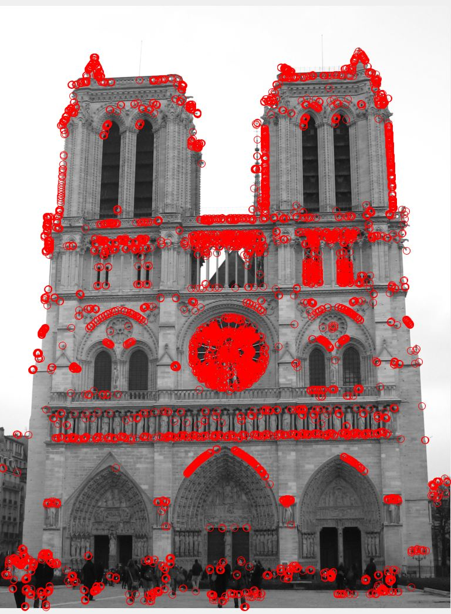
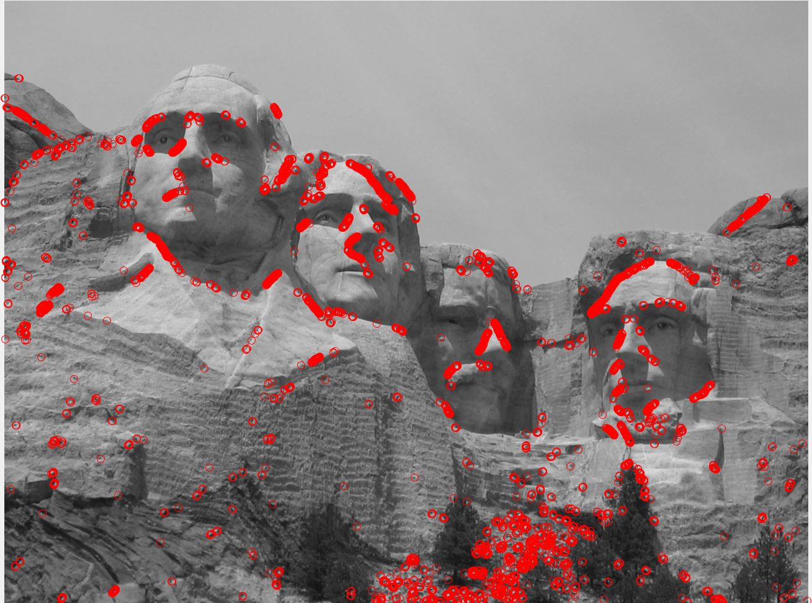
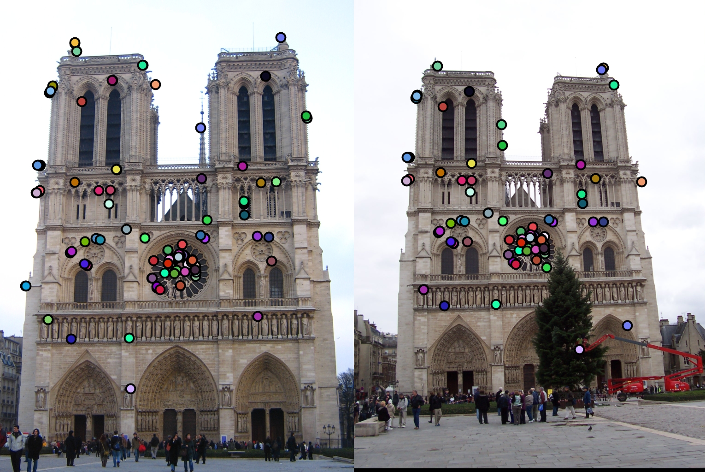
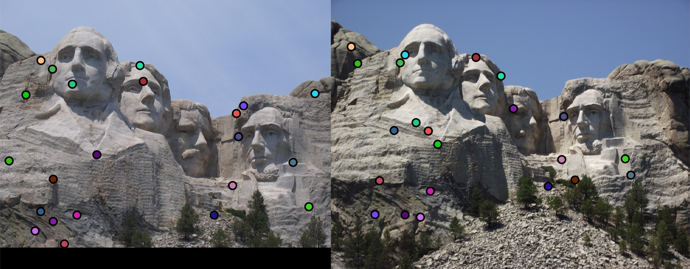
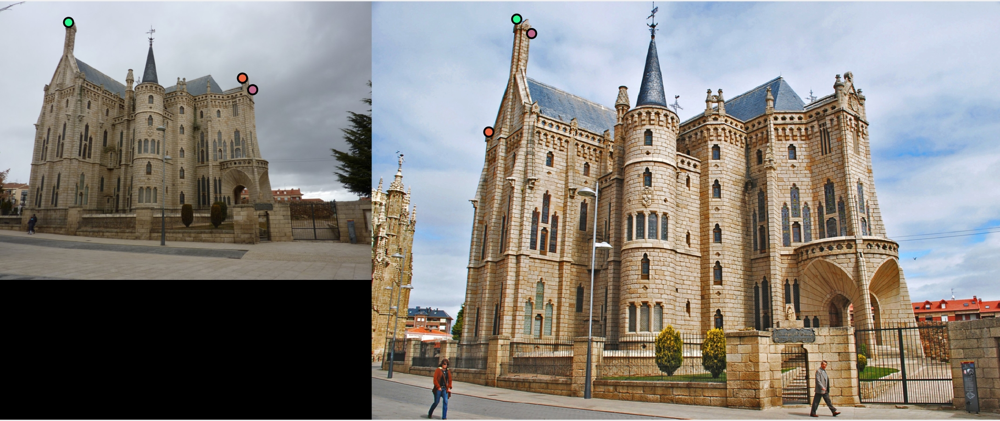

Project 2: Local Feature Matching
Local Feature matching takes two photos of the same object and matches points on each image to each other. By doing this, we can take two images of the same place and stitch them together using the common points. This is especially useful when seeing two images of different orientations. For example, one picture of the object is taken head on, while the other picture is taken from a 45 degree angle. Using feature matching, we would be able to stitch the two images together based on the points commonly found in both images. This results in the makings of a 3D image. If using thousands of photos with this process, a virtual 3D model can be made and explored, as seen in virtual tourism today.
In order to create this effect, 3 steps are required:.
- list Finding Interest Points
- list Getting Features
- Matching Feature
Finding Interest Points
There are 3 types of points that can be found on any image: corners, edges, and flat regions. Interest points are corners, because they indicate a significant change in gradient in the image. In order to find these points, we must first take the gaussian blur of the image. Afterwords, we need to use the Harris Corner Detector. The Harris Corner Detector takes the gradient of the image in both the x and y direction and does a series of operations on them as follows.
%Gaussian Blur
filter = fspecial('gaussian', [3 3], .5);
image = imfilter(image,filter);
%Take Gradient in X and Y directions
[Gx,Gy] = imgradientxy(image);
IX2 = Gx .* Gx;
IY2 = Gy .* Gy;
%Harris Corner Detection
part1 = IX2.*IY2;
part2 = (IX2 .* IY2).* (IX2 .* IY2);
part3 = alpha * (IX2+IY2).*(IX2+IY2);
%Computation of Harris Score for all points
cornerness = part1 - part2 - part3;
The cornerness matrix is a matrix that is the same size of the image that holds all the cornerness scores, or how likely a point is to be a corner. The Harris Corner Detector also states that in order to find a corner, the cornerness score must be above 0. THis is called non-maximal suppression. In this case, there were a lot of points with a cornerness score above zero, so I experimented with the threshold for an accepted cornerness value and said that all points with a cornerness score above .065 were interest points.
Interest Points on Notre Dame, Mount Rushmore, and Episcopal Gaudi respectively.



|
Getting Features
In order to find features, we have to use the SIFT algorithm. The SIFT algorithm takes in all the interest points and builds a "feature". A feature is built by first blurring the image passed in using a gaussian. Then, SIFT creates a 16x16 patch around the interest points. Afterwards, the patch is broken up in to 16 4x4s. Each 4x4 creates a vector of size 8, where each index is a "bin' representing an orientation from 0 to 360, and the value is the sum of all the magnitudes in that direction for that 4x4 patch. After doing this for each patch, the bins are appended to each other to create a 4x4x8 dimension vector, or a vector of 128 dimensions. That vector represents one feature. Finally, the vector is normalized and then added to the set of features.
blur = imgaussfilt(image, 3);
[Gmag, Gdir] = imgradient(blur);
bin = [];
for k=1:size(x)
currbin = [];
dirmat = Gdir(y(k)-feature_width/2:y(k)+feature_width/2-1, x(k)-feature_width/2:x(k)+feature_width/2-1);
magmat = Gmag(y(k)-feature_width/2:y(k)+feature_width/2-1, x(k)-feature_width/2:x(k)+feature_width/2-1);
for j=1:feature_width/4:size(dirmat,1)
for i=1:feature_width/4:size(dirmat,2)
newBin = zeros(1,8);
dirtemp = dirmat(j:j + feature_width/4-1,i:i + feature_width/4-1);
magtemp = magmat(j:j + feature_width/4-1,i:i + feature_width/4-1);
newBin = zeros(1,8);
for t=1:size(dirtemp,1)
for s=1:size(dirtemp,2)
...
end
end
currbin = [currbin,newBin];
end
currbin = currbin/norm(currbin);
currbin = currbin.^.2;
currbin = currbin/norm(currbin);
bin = [bin;currbin];
end
end
Features on Notre Dame, Mount Rushmore, and Episcopal Gaudi respectively.
|    |
Matching Features
The last part is matching features. Matching features takes a feature from the first image and tries to match it to a feature from the second. It does this by taking the two nearest neighbors of the first feature in relation to the second and takes the difference of the vector. It then tests the ratio of the nearest neighbor over the second nearest neighbor. If that ratio is under a certain threshold, then the feature and its nearest neighbor are a match.
Matched Features on Notre Dame, Mount Rushmore, and Episcopal Gaudi respectively.


|
Results
I managed to get an accuracy of around 86% on the Notre Dame image set. However, I had to run cheat_interest_points on the other two. The reason for this is because one image had around 2000 interest points and the other one had around 23000 points in both sets. Because of this, the ratio of matches to misses was so low that it might as well have been 0%. Because of this, the matching on the images that were not Notre Dame were very low.